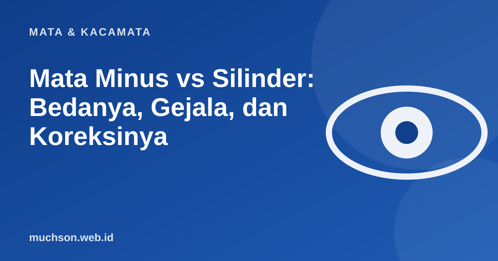

Beranda › Artikel › Mata & Kacamata
Mata & KacamataMata Minus vs Silinder: Bedanya, Gejala, dan Koreksinya
Sama-sama membuat pandangan buram, tetapi mata minus dan mata silinder berbeda penyebabnya, berbeda cara mengoreksinya, dan sering terjadi bersamaan. Geser, ketuk, dan coba simulasi di bawah supaya perbedaannya benar-benar terasa, bukan sekadar hafalan istilah.

Singkatnya: apa bedanya?
Mata minus: fokus jatuh di depan retina
Pada mata normal, cahaya dari benda jauh difokuskan tepat di retina, lapisan peka cahaya di bagian belakang mata. Pada mata minus (miopia), cahaya difokuskan sedikit di depan retina. Penyebab umumnya bola mata yang terlalu panjang, atau kornea dan lensa yang terlalu melengkung. Hasilnya, benda jauh tampak buram, sementara benda dekat masih jelas. Geser panjang bola mata di simulasi ini dan perhatikan titik hitam (titik fokus) bergerak terhadap garis merah (retina).
Perhatikan bahwa kacamata minus tidak "mengubah mata". Ia hanya menggeser titik fokus mundur sampai tepat di retina. Karena itu begitu kacamata dilepas, pandangan kembali buram.
Mata silinder: bentuk kornea tidak bulat sempurna
Kornea normal melengkung seperti permukaan bola. Pada astigmatisme (mata silinder), kelengkungannya tidak sama ke semua arah, lebih mirip permukaan telur atau punggung sendok. Cahaya yang masuk terpecah menjadi dua titik fokus, sehingga bayangan tampak kabur, ganda tipis, atau melar pada arah tertentu. Coba geser arah dan besarnya silinder di simulasi jam ini: garis pada satu arah menjadi kabur, arah lain tetap tajam.
Gejala yang perlu diperhatikan
- Menyipitkan mata untuk melihat papan tulis, rambu jalan, atau layar TV (khas minus).
- Mata cepat lelah, pegal di sekitar mata, atau sakit kepala setelah membaca atau menatap layar.
- Huruf atau garis tampak kabur, ganda tipis, atau miring (khas silinder).
- Sulit melihat jelas saat malam hari, lampu tampak berbayang.
- Memajukan layar ponsel atau buku terlalu dekat.
Gejala di atas juga bisa muncul pada kondisi mata lain. Pemeriksaan oleh dokter mata atau optometris tetap cara yang benar untuk memastikan. Segera periksa bila pandangan buram muncul mendadak, ada kilatan cahaya, atau bayangan gelap yang melebar.
Cara membaca resep kacamata Anda
Resep biasanya berisi OD (mata kanan, oculus dexter) dan OS (mata kiri, oculus sinister), dengan kolom SPH (sferis: minus atau plus), CYL (silinder), AXIS (arah silinder dalam derajat), dan kadang ADD (tambahan untuk membaca) serta PD (jarak antar pupil). Isi angka dari resep Anda sendiri ke penerjemah berikut.
Apakah minus dan silinder bisa sembuh?
Kacamata dan lensa kontak mengoreksi penglihatan, tetapi tidak menyembuhkan. Pada orang dewasa tertentu, bedah refraktif seperti LASIK atau prosedur lain dapat mengurangi ketergantungan pada kacamata, namun tidak semua orang memenuhi syarat dan ada risikonya, sehingga perlu penilaian dokter spesialis mata. Minus umumnya bisa terus bertambah sampai usia remaja akhir atau awal dua puluhan, setelah itu cenderung stabil. Ramuan, latihan mata ajaib, atau terapi tanpa dasar ilmiah tidak terbukti menghilangkannya.
Memilih koreksi yang sesuai
| Pilihan | Cocok untuk | Perlu dipertimbangkan |
|---|---|---|
| Kacamata | Hampir semua orang, termasuk anak | Mudah, murah, perlu penggantian bila ukuran berubah |
| Lensa kontak | Aktif berolahraga, tidak nyaman berkacamata | Perlu disiplin kebersihan; silinder butuh jenis khusus (toric) |
| Ortokeratologi | Atas saran dokter, sering dibahas untuk anak | Dipakai saat tidur, butuh pengawasan ketat |
| Bedah refraktif | Dewasa dengan ukuran stabil, atas penilaian dokter | Ada syarat, biaya, dan risiko |